Texto
Operación: Peñón a Flote
Una fisura submarina ha empezado a inundar la Cueva de San Miguel. Si no actuamos rápido, el agua hará tanta presión que el Peñón de Gibraltar se soltará y acabará flotando a la deriva por el Estrecho.
Los macacos ya están usando flotadores de flamencos. ¡Eres el ingeniero jefe y solo tú puedes detener este desastre usando tus conocimientos del Sistema Internacional de Medidas (SI)!
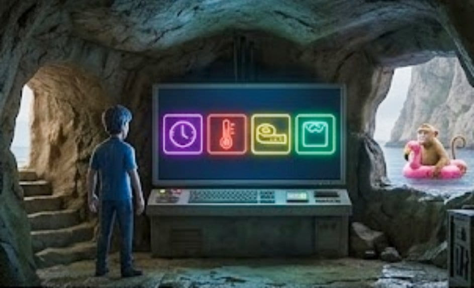
Reto 1: El código de anulación
Llegas a la sala de control empapado. El sistema principal se ha colgado y pide un código de anulación. En la pantalla parpadean cuatro iconos y el teclado solo tiene letras.
Debes introducir los símbolos oficiales del Sistema Internacional correspondientes a lo que miden esos cuatro dibujos, en ese mismo orden y sin espacios.
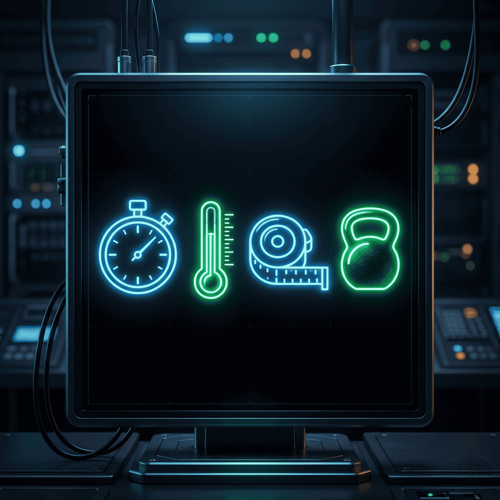
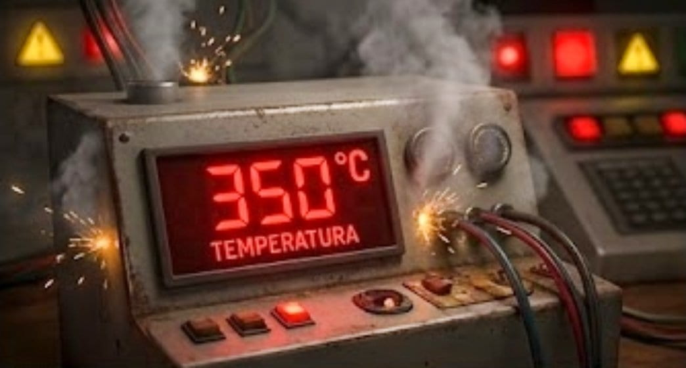
Reto 2: La sala de control
El ordenador arranca, pero saltan chispas. Los motores están sobrecalentados a "350" y debes cambiarlo a la unidad oficial del Sistema Internacional para que el sistema lo reconozca.
¿Cuál es la unidad básica del Sistema Internacional para medir la temperatura? (Escribe el nombre de la unidad).
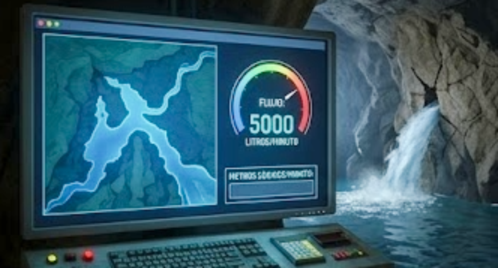
Reto 3: Calculando el desastre
¡Panel desbloqueado! Ahora puedes ver el flujo de agua. Entran unos 5000 litros por minuto. Para configurar la barrera de contención, la máquina te pide que conviertas esa cantidad a la unidad del SI para el volumen.
Recuerda que 1000 litros equivalen exactamente a 1 de esta unidad. ¿A cuántos metros cúbicos equivalen 5000 litros? (Escribe solo el número).
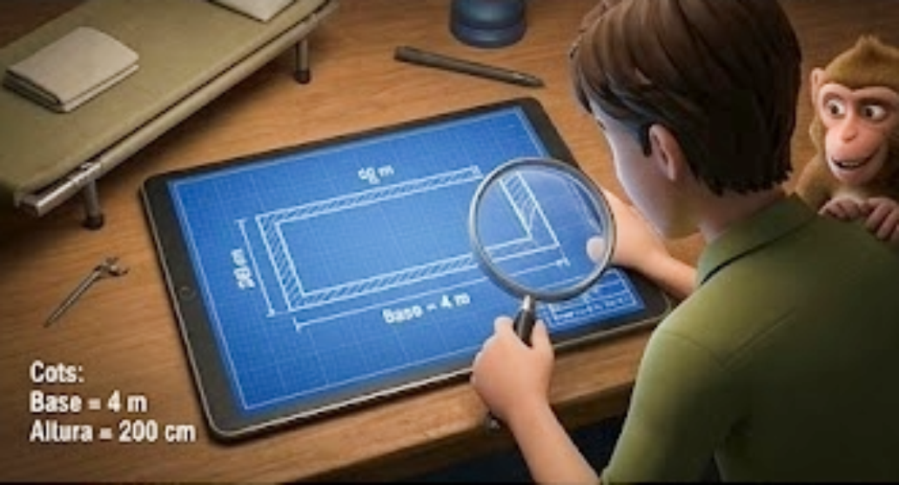
Reto 4: El plano de la grieta
El ingeniero de La Línea te pasa por WhatsApp el croquis de la grieta. Para fabricar el parche de metal, necesitas calcular la superficie exacta de la fisura. ¡Pero cuidado! El que hizo el plano mezcló unidades.
Calcula la superficie de la grieta en metros cuadrados. Recuerda pasar todo a metros antes de multiplicar la base por la altura. (Escribe solo el número).
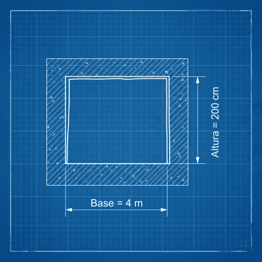
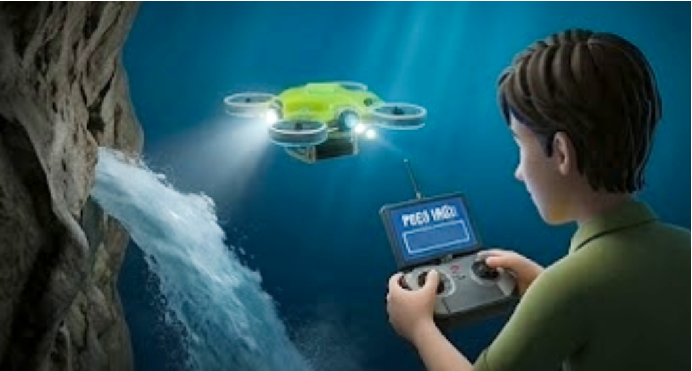
Reto 5: Sellando la grieta
Las bombas funcionan, pero hay que tapar el agujero. Tienes que enviar un dron submarino cargado con un cemento especial de secado ultrarrápido. El ingeniero británico te grita por radio: "¡Necesitamos 4000 gramos de cemento!".
Sin embargo, el dron ha sido fabricado en La Línea y su software exige que introduzcas la masa en la unidad fundamental del SI. Si necesitas 4000 gramos, ¿qué número debes teclear en kilogramos? (Escribe solo el número).
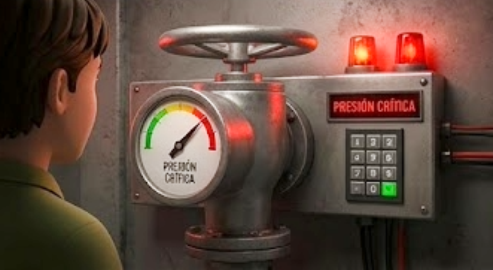
Reto 6: Peligro de estallido
El dron ha colocado el cemento, pero el agua empuja con fuerza mientras se seca. La pantalla parpadea en rojo: ¡Alerta! La fuerza del agua sobre la superficie del cemento es crítica. Necesitas abrir una válvula de alivio.
La pantalla te hace una pregunta de seguridad para confirmar que eres personal autorizado: La presión es la fuerza aplicada sobre una superficie. ¿Cómo se llama la unidad de medida de la presión en el SI? (Pista: Empieza por P).
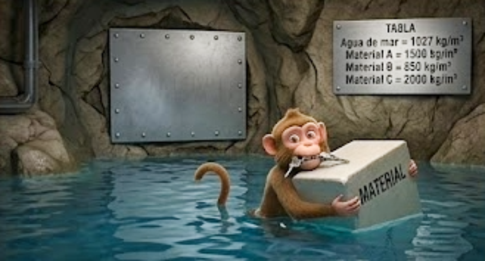
Reto 7: El rescate de las llaves
¡La grieta está sellada! Pero cuando vas a huir, un macaco te roba las llaves de la lancha y salta al agua abrazado a un material del almacén. Usando la tabla de densidades, debes adivinar qué material agarró para saber si flotará.
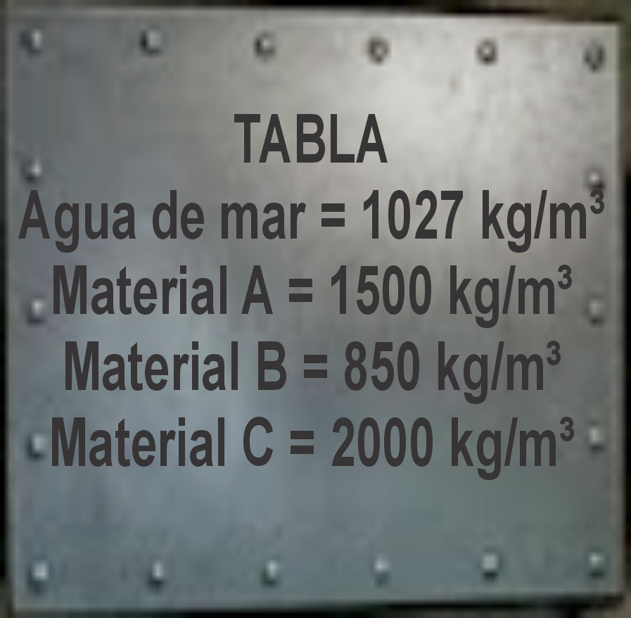
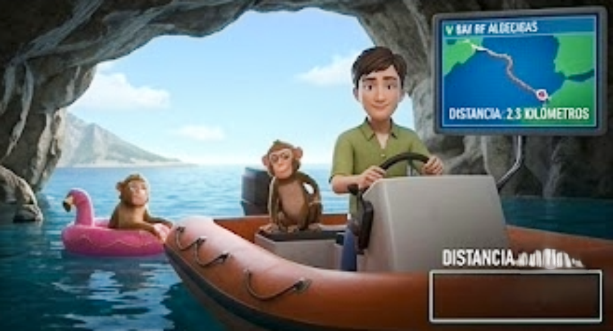
Reto 8: Evacuación final
¡El cemento ha aguantado! El Peñón vuelve a estar seguro, anclado en su sitio, y los macacos te aplauden. Pero la cueva sigue inundada y tienes que salir de ahí pitando en una lancha de rescate.
El GPS indica que la salida a la bahía está a 2,5 kilómetros, pero está desconfigurado y te pide la distancia en la unidad básica de longitud del SI. ¿A cuántos metros equivalen 2,5 kilómetros? (Escribe solo el número, sin puntos ni comas).
¡ENHORABUENA! 🏆
Has salvado el Campo de Gibraltar de tener un Peñón a la deriva por el puerto de Algeciras. Tu dominio del Sistema Internacional de Medidas ha evitado una catástrofe histórica.
¡Eres un héroe! Misión Cumplida.